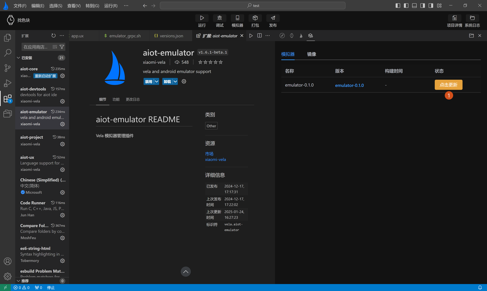

# 设备管理
设备管理页主要分为两部分：
- 1.模拟器版本管理：提供对模拟器的增删改查和运行功能，如下图1所示。
- 2.Vela镜像版本管理：提供对模拟器运行环境所需的SDK包的安装和更新，如下图2所示。

# 模拟器设备管理
模拟器设备管理，主要展示模拟器的基本信息：
- 名称
- 镜像版本
- 屏幕尺寸
- 构建时间
- 操作栏（提供删除，运行等功能）
此外，用户可以点击左上角新建按钮进入模拟器创建页面。
# 自动创建模拟器
在初次使用 AIoT-IDE开发工具时，在初始化模拟器环境时，会检测本地是否已经创建过模拟器，若本地没有创建过模拟器将会提示开发者是否要自动创建模拟器。
选择确定，将会在初始化环境后自动创建一个正式版模拟器。
选择创建所有设备模拟器，将会自动创建所有设备类型的模拟器。

# 新建模拟器
点击上图新建按钮打开模拟器创建页面。首次进入创建模拟器页面，镜像版本默认为vela-miwear-watch-5.0，输入模拟器名称后，点击新建即可完成创建。如下图标签1，2，3，4所示：

除了默认的vela-miwear-watch-5.0镜像，还可以在上图标签3中，下拉选择vela-miwear-watch-4.0镜像和vela-watch-4.0镜像，如下图标签1，2所示：

在设备管理列表中，可对已创建的模拟器进行操作，目前提供了运行，暂停，删除等操作按钮。
此外，在设备管理列表中，为了方便用户操作，还提供了多个快捷配置：
复制启动命令：复制当前模拟器的启动命令，方便用户通过命令行自启模拟器和模拟器启动失败时进行排查。
打开模拟器目录：打开模拟器文件存放目录，方便直接查看模拟器配置文件。
打开镜像文件：打开模拟器SDK包存放目录，方便直接查看模拟器SDK包文件。
安装Rpk：在模拟器运行成功后，用于可选择本地环境里Rpk包，直接安装预览（模拟器非运行状态时禁用）。
自定义镜像目录：当用于本地多有个镜像文件时，用户可以自定义镜像目录，运行自己本地的镜像文件。
重置镜像目录为默认：用户自定义镜像目录后，可以通过重置镜像目录为将镜像运行目录重置为系统默认目录。

# 模拟器SDK管理
模拟器SDK管理主要分为两部分：
- 模拟器内核，如下图1所示
- 模拟器镜像，如下图2所示

模拟器SDK管理页面中主要从四个维度展示模拟器信息
- 名称
- 版本
- 构建时间
- 状态
每次启动AIoT-IDE时，会自动检测模拟器内核和模拟器镜像版本是否需要更新或安装，用户可以在列表的状态一栏中，查看到模拟器内核或被模拟器镜像是否安装或是否需要升级，可手动点击安装或升级，如下图1所示

# 设备使用配置
除了上面的基础功能，模拟器设备管理页面提供可一项单的的设备使用配置（如下图1所示）：
- Adb Mode: 是否优先使用插件内置的adb模块，还是使用主机本地的adb模块（如下图2所示）
- Hide Qt Window: 是否使用GRPC技术将模拟器嵌入到IDE中显示，否则在IDE外部弹出显示（如下图3所示）。